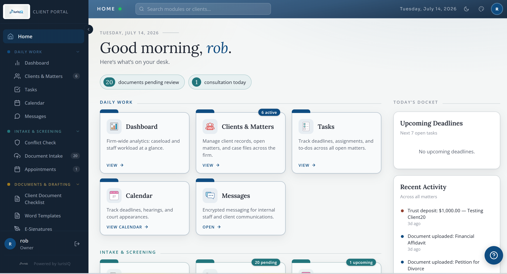
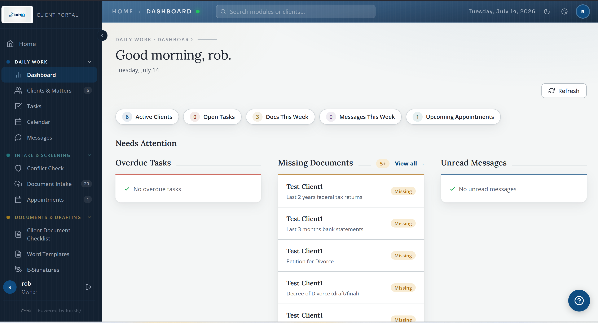
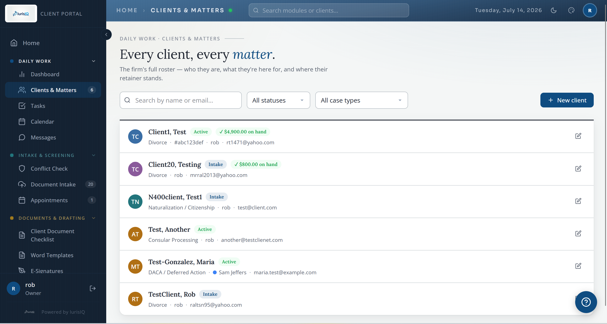
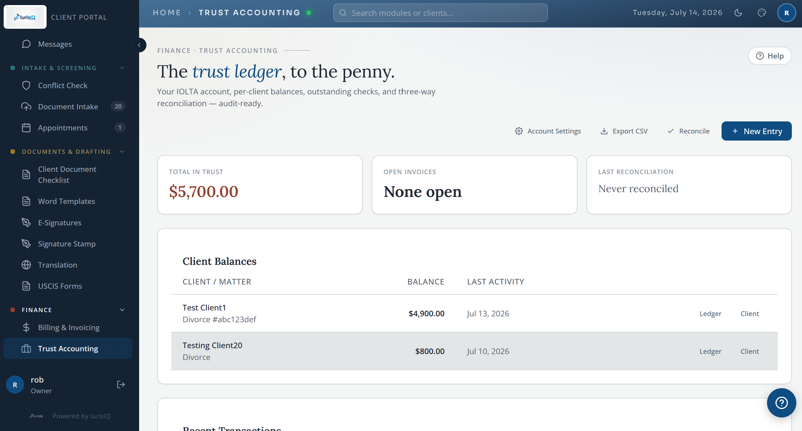
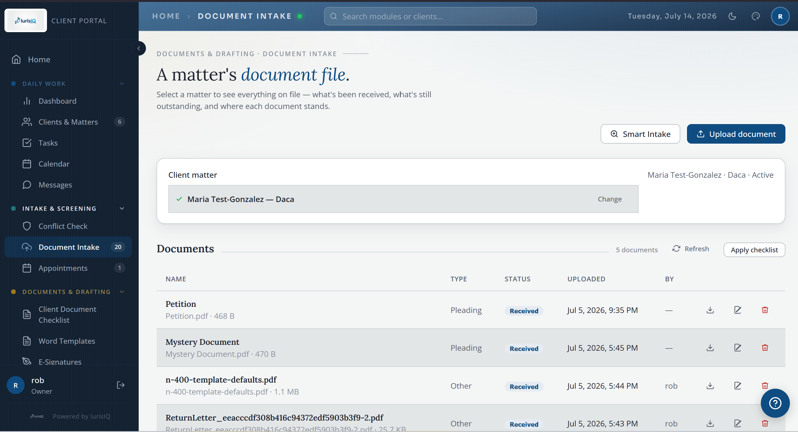
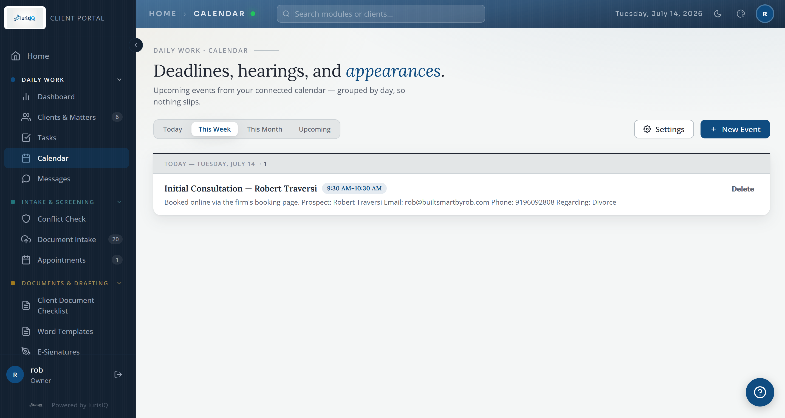
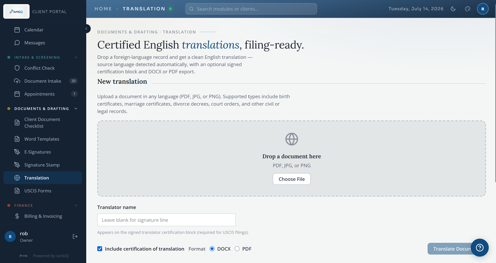

IurisIQ is the modular, AI-powered case management portal built exclusively for small law offices — where AI amplifies your practice without ever compromising client confidentiality. Secure by design. Customizable by nature.
Starting at $49/mo per seat (2-seat minimum) — the full core portal included, premium modules added as you need them.
Built and run by Rob Traversi — the same person behind Built Smart by Rob. Not a vendor licensing a generic platform; a purpose-built system, deployed and supported directly.

Every decision in IurisIQ traces back to these two principles. Not marketing — architecture.
Every firm is different. IurisIQ starts with a rock-solid core and lets you build outward — snapping in purpose-built modules for the exact workflows your practice needs. It shapes itself to you, not the other way around.
Attorney-client privilege doesn't pause when you use AI — and with IurisIQ, it doesn't have to. Your clients' data never trains external models, never leaves your environment, and is protected at every layer.
Every IurisIQ deployment ships with the complete core — not a stripped base that charges extra for the essentials you actually need. Every feature below is standard in every deployment, at no add-on cost. Here's what's live on day one.
Full bar-compliant trust accounting in every deployment — real-time ledger, three-way reconciliation, and bar-audit-ready reports. No separate software, no add-on fee.
Search prospective clients, opposing parties, and counsel across your entire matter history in under two seconds. Conflicts surface with clear explainability — and every check is logged for bar compliance.
Clients log in to their own secure space to view their matter, upload documents, and track progress. No phone tag.
Secure storage with enterprise-grade malware scanning. Every file is scanned before anyone can open it.
Configurable matter schemas for any practice area. Never locked to a single specialty.
Trigger-based lifecycle reminders: "X days after Y event, remind staff to do Z." Runs on schedule, automatically.
Staff and client auth with flexible, data-driven roles enforced at the database row level — not just the UI.
Instant alerts on uploads, activity, and deadlines. Staff and clients stay informed without you lifting a finger.
Nightly encrypted offsite backups with a tested restore runbook. Row-level tenant isolation. Sleep easy.
You provide an export from your current system; we handle the mapping, clean-up, and import. Your records arrive organized and ready — no rebuilding from scratch.
Required for attorneys and firm owners. A time-based code on every sign-in means a stolen password alone can never open the portal.
Visually tag matters to their assigned attorney. Scan the dashboard and know who owns what — instantly.
Staff enters just a name, email, and case type — the portal sends the invite and the client fills in the rest. No more chasing intake forms.
Threaded, searchable, documented communication between firm and clients. Encrypted in-portal messaging with a full audit trail.
Beyond the core, IurisIQ grows by module. Premium modules are optional add-ons you activate — and pay for — only when you need them. Each one plugs into your existing portal the day it's turned on, with no new logins and no separate integrations. This is also where the intelligence layer lives: purpose-built tools that work with the matters and files you already have, entirely inside your isolated environment — never a public AI tool.
A private intelligence layer over your own matters, deadlines, and files. Ask a question and get an answer drawn from the documents you already have — surfacing summaries and connections in seconds, all inside your isolated environment.
"Summarize everything that's happened on the Ramirez matter since March."
Private conversational AI to query your firm's documents, judge preferences, county policies, and institutional knowledge. Your firm's collective knowledge, instantly accessible.
"What's Judge Martinez's stance on continuances?"
Financial discovery, read and understood. Pulls the other side's entire production into your secure portal, reads every page, and tells you what you have, what's missing, and what they didn't disclose.
"Which accounts received transfers over $10,000?"
Generate documents from your firm's own templates instantly — populated from the matter you're already working in. Less time drafting, more time practicing.
Translate client documents directly in the portal — Spanish to English included, other languages on request. Language barriers shouldn't be intake barriers.
SHA-256 integrity and a full audit trail. Legally sound, frictionless for clients, and documented forever.
Pull unbilled entries from FreshBooks or QuickBooks, generate invoices with a payment link embedded, and watch the trust ledger update when the client pays.
Hearings, deadlines, and appointments synced with the calendar your firm already uses. Supports iCal subscriptions.
Prospective clients book consultations from your website — pick an attorney, grab an open slot, and the booking lands in your portal. You only ever show times you're actually free.
Two-way sync between the portal and your firm's Dropbox or Google Drive. Uploads mirror to your cloud, and files you add there flow back onto the matching matter automatically.
A bespoke metrics view integrating Stripe, QuickBooks, calendars, and payroll data — the health of your practice in one screen.
If the menu doesn't cover your workflow, we build it. Custom modules are scoped, designed, and delivered to your exact spec — on the same platform, no new logins.
IurisIQ's AI architecture is designed from the ground up around one principle: your clients' information never leaves your controlled environment. Unlike generic AI tools, IurisIQ runs in an isolated, single-tenant deployment where the AI works with your data — and only for your firm.
Your firm's database, storage, and AI context are completely separated from any other client. There is no shared pool — ever.
Your documents serve as AI context. They're never used to retrain or improve any external model. Your knowledge stays yours.
Role permissions are enforced at the database row level. Even a misconfigured UI can't expose data it shouldn't see.
Every file — from clients or staff — is scanned by a commercial antivirus engine before it's visible. Infected files are deleted automatically.
Your data is backed up nightly to encrypted offsite storage with a tested, documented restore procedure. We've run the drill.
Attorneys and firm owners must enroll in TOTP-based 2FA. A stolen password alone can never open the portal.
The security thinking behind IurisIQ is the same standard applied across every Built Smart system. See the full Security & Privacy breakdown → · For attorneys weighing AI against their ethical obligations, read the AI & Law analysis →
Real screens from a live IurisIQ deployment — the day-to-day command center your team logs into.






No canned demo, no drawn-out sales cycle — a straight path from conversation to a live portal.
We learn your practice, your workflows, and your friction points — a real conversation about what actually slows you down.
Your isolated portal is configured, branded, and delivered. Staff and clients get access. The full core is live and running.
As your needs evolve, new modules are activated or built to spec. Your portal grows with your practice, on your timeline.
IurisIQ is deployed for law firms by the same person who builds them — not a vendor licensing a generic platform. No sales pressure, just a real conversation about your practice and whether it's the right fit.
Starting at $49/mo per seat · 2-seat minimum · full core portal included